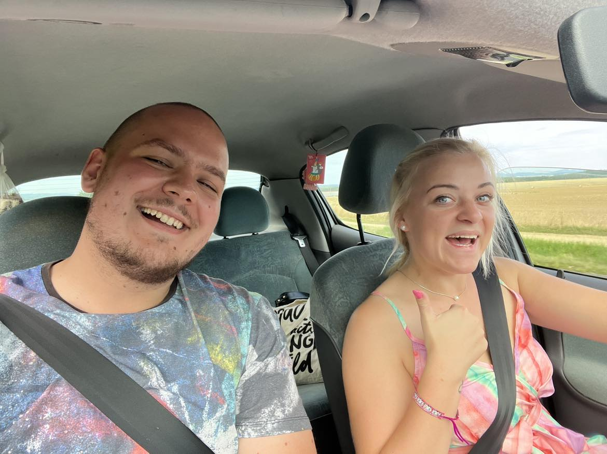

Osud
Vnímám ten rozpor, co ve mně vře, Vedle tebe ticho, ale srdce řve. vnitřní chaos se mísí s touhou, jsi pokladem a zároveň mentální zhoubou.
Vím, že jsme si stanovili pravidla hned první den, Dokud spolu pracujeme, je vše maximálně sen. Proto bylo těžké o mých citech mluvit nahlas, Vše to komplikovat, ztrácet tvůj drahocený čas.
Ale nedávno mi došlo, že tak skvělou holku nemůžu jen tak nechat jít, zda-li bych potkal ještě někoho, ským bych si život dokázal představit.
Chci riskoval, víc poznal tě a tvůj svět, I kdyby to znamenalo změnu nebo rovnou pět. Odejít z aktuální práce, všechno nechat osudu, Nové dveře otevřít, směřovat společně k novým obzorům.
Chci stát ti po boku, držet tvou ruku, Obejmout tě, když smutek tvé modré oči zalije, Opěrným bodem být, když přijdou těžké chvíle, Pomoci ti dosáhnout snů, vždycky stát ti po boku.
Tak dej mi šanci, slyšet tvé srdce bít, Napsat nový příběh a svět společně objevit.
Tajemný závoj
Z desítek těch, Žen co denně chodí kolem, Nebo stovek co za život potkám, Jsou možná dvě tři, Hodné hříchu, Ale né mého času. Jen se poflakují kolem tváří se jak primadóny, Přetvářka a neupřímnost, přesto se snaží vypadat autenticky. Netřeba to více rozvádět, Že jsem jeden z těch, Co nepotřebuje takovou holku pro uspokojení lidských potřeb.
Být zamilovaný je hrozné že? Ta zranitelnost, Když se němoku otevřeš, Otevřeš své srdce. Dáš mu šanci proniknout dovnitř, Poznat, co ti dělá radost a co žene v před. A zároveň tu temnotu, Ty démony, co stínají tvé pocity, Traumata, co dávno zapustila kořeny. Všechna ta zavazadla, která tvou duši tíží. Tu šanci dostat se dovnitř a sílu všechno zkurvit.
Znám to … Znám to, když je člověk sám, S hlavu plnou myšlenek co sebou vláčí, Ty dlouhé procházky přírodou, Noční uličky co ti strach nahání. Ale i pro takovou silnou duši, Vytrvalou, Umanutou, Samostatnou jako ty. Není nejlepší, Házet mé psychické problémy.
Všichni je máme, Problémy, tajné a skryté, Snažíme se je umlčet. Doufáme, že zahynou, Že zapomene je čas. Ale přes veškerou snahu, Nechat je navždy za sebou, Vždy dostihnou nás. Vždy když to nečekáš, v ten nejhorší možný čas. Pojďme je společně hluboko zakopat, Ty útrapy, které tíží naše ramena.
Dnes už nic nezmění můj názor, Na tvou roztomilou tvář. Nebýt toho kluka, Co hází mi klacky pod nohy, Kdo ví co dnes mohlo být znás. Vždy když ho vidím, chci mu jednu vrazit. Rozsypané střepy mé problémy ale nevyřeší. A tak dál před zrcadlem stojím, Ptám se sám sebe na tunu otázek, Co baví mě, žene dál, co motivuje mě. Možná existuje někdo, kdo odpovědi má, Ale jsem v piči a dnes už si nejsem jistý, Zdali bych si zasloužil tu odpověď znát.
Stíny duše
Vše bych chtěl vzít zpět, začít odznovu, Chyb jsem udělal ranec, některých vážně lituju.
Ukážu ti kdo opravdu jsem, jak vypadá můj svět Možná potom pochopíš a odpustíš co bylo, Čeho se bojím, co mě tíží a posouvá v před. Tomu co příběh náš tak trochu zamotalo.
Mám toho moc na srdci, ani nevím odkud začít, Rozlišit co jsou sračky a co důležitý věci, Své myšlenky nedokážu ani za rok vysvětlit, zkusím to v několika větách, srozumitelně ucelit.
Jsem naivní trouba, co žije v destopickém filmu, Pohledný mladý kluk, kterého život změní trocha firnu, Je sám sebou, dělá co ho baví, proště daří se mu, Ale přitom na svých zádech nosí spoustu problémů.
V mládí veselý kluk co měl rád věci pod kontrolou, Po boku řadu přátel a hlavu správným směrem natočenou. Pak přišel osudný den, kdy svět se mu vzhůru nohama obrátil, Kromě zdraví, snů a motivace i svůj mladiství elán utopil. Poznal jak snadno život vyjebe s člověkem, Také hodnoty, kterých většina nedojde ani s přibývajícím věkem.
Všechno to začalo nevinou strkanicí, Kdy chtěl dát najevo svou dominanci. Týpek se choval jak kokot k holce co jsem měl rád, Klasická puberta co si budeme povídat.
Už moc nepamatuji si sled těch okolností, Najednou pět týpků na mě a krík plný bolesti, Kolemdoucí běží, křičí “co se děje”, Vybavuji si pouze strasti plné obličeje. Syrény houkaj, letíme městem, ale mou hlavou honí se jen Že dneska měl být konečně den, kdy jsme spolu měli jít ven.
Pak nastala doba operací, rehablitací a změn, Dva roky kdy jsem nebyl schopný vykročit ven, Všechny mé vztahy se rozplynuly skoro hned, A jediné co zbylo mi byl počítač a internet. Nejlepší je na tom všem, že zjistil jsem s návratem do školy. Že můj nejlepší kámoš mezitím, sní začal dělat domácí úkoly,
Naštěstí všechno nemůže být jenom černé, Osud přeci také dává, nejenom bere, A tak jsem poznal mnoho zajímavých tváří, které i přes své problémy, úsměvy jenom září.
Mezi nimi i holku, blonďatou krásku s duší lovkyně. Dodala mi seběvědomí, než dokázala jaký život je svině. Vary, Benešov, nezvládali jsme se vídat denně, A tak si našla jiného, potřebovala pozornost, přirozeně.
Dny a roky plynuly, než jsem dokázal dát šanci znova, Na prvním místě rodina, svoboda a občas zábava.
A pak přišla do mého života dívka dodnes poslední, Potkali jsme se náhodou, byly jsme dost obezřetní, Já měl trochu problémy s důvěrou, no stále je mám, Z její strany to byl kalkul, když na to tak vzpomínám.
Ironií toho všeho je zjištění, že máme společné přátele. Dost rychle objevil, že v téhle lásce mám i nepřítele. Přesto že jsem do toho šel nesměle, stejně bylo nakonec těžké poslat ji do ******.
Chtěla trávit volná odpoledne pospolu, Nikdy ale nezůstala v Plzni přes pátek, sobotu, Vždy když jsem se snažil zjistit proč, Odvětila, promiň mám toho v ČB moc.
Nelhala to je pravda, jen mohla být ke mě upřímná, že už 3 roky tam má frajera. A i když jsem do toho šel dosti nesměle, stejně nakonec poslal jsem ji do ******.
Proto je pro mě těžké věřit opravdu někomu, Vždy když jsem to zkusil, tak dostal jsem na hubu. Zároveň nechci aby bylo mým největším žitovním selháním, Vědomí že v životě ničemu nedám šanci, nic nezkusím.
Opravdu moc nechodím ven, žiju tak trochu ve svém vlastním světě. Ale je spousta věcí, které chtěl bych dělat, třeba s tebou na šumavě, na výletě.
Největší strach mám z toho, že mi ujel vlak, Jestli příští dívka kterou potkám ustojí ten tlak, Bude mít trpělivost a ochotu naučit mě život žít, Jsem skoro panic, nezkušenost ta mi může všechno vzít.
Tornádo emocí
Jak se máš, tím to přece začíná, Vím, že dneska nemáš čas, ale kdy tu budu zas. Budu mluvit, jenom řekni co si dáš, Tonic Gin a na dno trochu ice.
Můžeš mě mít ráda, ale nevim, jestli máš, Žiju rychle a usínám pomalu, fakt mám strach, Když tě vidím, vážně nevím, co dělat mám, Vše ti říct, je to správně, sám se sebe ptám.
V ruce držím Savinon, sedím na vrcholu Mont Blank, Poppers jsem vyměnil za sníh, ten bílej přímo z Alp, Hada jsem uškrtil, ale proč mi furt nejde spát? Najednou pípla zpráva a já mám chuť se zase smát.
Nemusíš říkat nic, jen za ruku mě chytni, Buď má road babe a já budu tvůj Bentley, Neboj se nic, všechno jednou budem mít, Mnohem víc, než to očem děnně v noci sníš.
Dej mi čas, protože ještě nechci spát, Pojďme se projít, s tebou to mám vážně rád. Spolu najdem ty správné dveře a s ními klíč, Dělat jenom prachy neznamená v životě vůbec nic.
Do noci tancovat, na boso zpívat to je víc, Než to Porsche a LV bag, do noci do ohně zírat, Je víc než to zlato co budem na krku mít, Kate, Utíkat nemusíš, všechno tu máš, chci jen s tebou bejt.
Strany mince
Přemýšlel jsem co vlastně chci říct, Mluvit o těch dlouhých nocích bezesných Vypisovat se z toho co všechno trápí mě, Tohle nemá být žádná sad story, prosím tě…
Líbíš se mi a to není důvod smutnit, Spíš být špastný, možnost slavit, Za to že jsem tě poznal vděčný jsem, Záleží jak to skončí brekem nebo úsměvem.
Všechny komplikace způsobil jsem si sám, Můžou za to ty moje životní pravdila přísahám, Porušit své zásady to jen tak nezvládám, Hlavně když v ně věříš taky, co si říkala vzpomínám.
Vždy jsem zastával přísloví, don´t crap where you eat, Ale co nadělám, v mžiku tančíme na stejný beat, A ve chvíli kdy vřou všechny ty emoce a pocity, Ty odříkáš to stejné pravidlo, facka, návrat do reality.
Byl to dostatečný wakeup call, hluboce se zamyslet nad sebou, Atak jsem se snažil potlačit všechny emoce, dělat že je vše OK. Nechtěl jsem tahat osobní věci do práce, měnit své názory najednou. Teď už ale vím, že jsem jenom neměl koule udělat ten správný krok.
Ale úplně se mi to nedaří, místo toho přijde mi že se chovám dál jako vůl. Není fér abych na tebe byl hnusnej, odtazitej, nepříjemnej, sypal ti do rány sůl, A to vše jen protože jsem děcko co nezládá vlastní emoce, Ublížit ti je to poslední, to myslím vážně, z nitra mého srdce.
Kdykoliv se zachovám jako dement, tak jsem na sebe nasranej, a čím vic jsem na sebe nasranej, tím vic se chovám jak dement. Zpětné si říkám, že jsem to měl řešit od úplného začátku, ale nechtěl jsem ti komplikovat život, o to jde už od počátku.
Byl jsem štastný každé ráno, když první věc co mě probudila, Zpráva: ,, Jedu autem do práce”, hned mi den zpříjemnila, Postupem času mi však začala kurvit den, Chtíč, pocity, emoce, k jejíchž ingnoraci jsem byl donucen.
Kdyby to končilo tou cestou, V zápětí ale sedíme předsebou, Místo práce, myslím na tebe většinou. Přestal jsem chodit na kancl, potřebuju zkurveně dlouhou dovolenou.
Celkem ironie když jediné co chci je tvůj čas, trávit ho s tebou Byl jsem dokonce v situaci kdy jsem měl výpověd na stole připravenou. Jenom proto abych měl šanci tě někam ofiko pozvat, Nakonec mi to ale bylo rozmluveno, prej bych toho mohl litovat.
Já se rozhodl, není čeho litovat, Jsem dospělý, ochotný pro tebe riskovat, Ale nechci aby sis můj odchod dávala za vinu, Když bych se rozhodl k tomuhle razantnímu činu.
Vlastně vůbec nevím co dělám, Jen chci abys věděla že jsme v poho, Abych srovnal si ten guláš v hlavě, Potřebuju prostor a trochu času.
Je to co chci? Není, tohle není představa má, Jde přece o to co chceme oba, karta je teď tvá.
Denní Svit
Když slunce vyjde a ranní rosa svět promění, Tvá přítomnost dá mi směr ba dokonce i cíl.
Jak květy rozkvétají v úsvitu, má duše tiše vzplá, Úsměv tvůj mi dodává odvahu, abych mohl kráčet vdál.
Tvoje oči jako jasná letní obloha září, V nich nacházím domov, kam srdce mé patří.
Tvé slovo mě hřeje jako první sluneční paprsek, Nedokážu ani pomyslet, co dokáže tvůj něžný dotek.
Dlouho jsem se zdráhal říct, co v mé hlavě skryté je, Jak moc tě toužím mít, jak moc chci držet tě.
Většina lidí má problémy s mými názory, upřímností a často dávají mým slovům úplně
jiný význam. Možná to bude tím, že mi dělá potíže interpretovat mé myšlenky do slov.
Možná proto jsem se naučil být často potichu, než bavit společnost.
Tenhle text zpoveď mých emocí a myšlenek posledních dvou měsíců. Píšu to zejmnéna proto,
abych ulevil své hlavě a hlavně srdci. Posledními slovy se mi dost díky tomu ulevilo,
srovnal jsem si myšlenky, ale nic to nemění na tom, že i přes všechny morální a osobní
překážky bych nejraději stejně vše vsadil na MODROU.
Ať se v dalších měsících stane cokoliv, už na vždy budeš mít místo v mém životě.
Pomohla jsi mi jako člověku posunout se v životě dál a být asi i více upřímný sám k sobě.
I kdyby jsis to nikdy neměla přečíst, věz jsem tu pro tebe. All In.

Wrestling
Midnight in September Blackout the moon Car lights sweeping my room Alone here and thinking of you And tonight I won’t sleep A thought keeps on wrestling with me
I'm hella stressed I'd rather chill Today you looked at me And I wonder how I dealt What have you seen in my eyes How my heart is melting down? Just tell me whats on your mind Don't leave me hanging in this silent town If you do, it might be my funeral All i want is to hang out with you.
I'm ready to surrender I've worked hard Sabotaging my life And I'm paralyzed, Somethings comming Rattling keys Could it be Breaking point for me To get out of the chains That wont let me be
I'am tryin' so hard, Gettin' my mind right There's somethin' I fear now I'm bein' backward In comin' forward So I keep waitin' for right time Keepin' away from you How hard it's for me to sleep at nights So help me out, I'm sayin'
Tonight I won’t sleep A thought keeps on wrestling with me Tonight I’ll get no rest Until i fall exhausted, getting rid of the thought sitting on my chest.
Closure
Early october morning, I am sitting at the beach Looking to the horizon While the raindrops fall over me Noone disturbing, Whole city is fall asleep Its just me and my thoughts And the sound of the sea
In water's flow, a glass bottle, red wine's delight, Which I drank, to placate my memories right. Now I see it vanish, over the horizon's grace, Carrying desires, no longer to chase. To grab your hips, pull you near, Look into your eyes and make it clear. Kissing your lips, the love I had to resist, The taste love and though I couldn't persist.
Damn, something's wrong, something's spoiling this moment, Beautiful Spanish girl, like a sweet omen, We were at the bar, just an hour ago, Now she sits beside me, her smile all aglow. She puts her head gently on my shoulder, Though I didn't expect, it's getting bolder, I know anything won't happen tonight, But escaping my thoughts feels so damn right.
I hope this is the closure guess the worst is over I'm finally getting better picking up the pieces Putting my heart back together heart i offed you before.
Já už fakt nevím co mám dělat. Poslední půlrok mého života se takřka točil kolem tebe. Ale docházejí mi síly, jsem na pokraji svých sil. A šílenství, toho jak jsem do tebe blázen. Mého racionálního vědomí, které bojuje proti mému srdci, nekonečnou bitvu mezi strachem, chtíčem a názory druhých. Názory druhých, ty vždy vyhrajou před těmi mými. Tím nemyslím že by mě zajímalo co si ostatní o mě myslí. Spíš vnitřní potřeba dopřát ostatním všechno co chtějí i z předpokladu osobní újmy. Čím víc je pro mě člověk důležitějším tím více věcí se dokážu vzdát. V životě mám přeci všechno co potřebuji, je na mě abych to předal dál To je přesně důvod proč dělám marketing, plnit sny a potřeby ostatních.Proto i když tak strašně s tebou chci teď bejt, nutit tě řešit ty sračky v mé hlavě, si prostě nemůžu dovolit.
Je to strašně těžký bojovat s vlastní hlavou, na jednu stranu tu chci být pro tebe vít tě do náruče kdykoliv ti se ti zasmutní, nabídnout ti rameno kdykoliv slzu uroníš, každý den tě rozesmát ať můžeš svůj úsměv šířit dále, držet tě za ruku kdykoliv nebudeš mít sílu pokračovat dál. Být po tvém boku kdykoliv to jenom půjde, na cestách po šumavě, ve sprše nebo na druhé staně zeměkoule. Může se to zdát jako prosté kliše, ale ze srdce mého to myslím vážně. I přesto že chci tě svléct, není to to jediné co mě k tobě táhne.
Na stranu druhou kdykoliv tě vidím, mé sdce tak 1000x rychleji buší, mozek spozorní, začně přemýšlet o sračkách, důvodech kterých mému štěstí brání. Potom ze mě nevyleze kloudného slova, připadám si jako kdybych byl duší mimo, pozoroval nás prostřednictvím venkovního okna. Nejkomičtější na tom je, že si to uvědomuji a snažím se stím něco dělat, ale čím víc stím bojuju tím víc se v tom utápím. A jediné řešení které mě poslední dobou napadá, je dát výpověď a zmizet ti z života.
Každý máme nějaké zábrany v životě, které nás svádí na špatnou cestu. Poslední dobou mi dochází že tou mojí je intimní vztah. Vždy jsem bojoval za myšlenku, že nemusím spát s každou holkou jenom protože mě přitahuje a dá mi tu možnost, ale bojovat za dívku se kterou mě nebude tolik zajímat ten večer jako příští ráno a to další, další a další.
Dnes mi je 27 a se sklopenými uši musím přiznat, že sebevíc stále stouto myšlenkou souhlasím, tak musím přiznat že to pro mě znamená že nakonec umřu sám. Ať se to říká sebehůř, to že nemám zkušenosti v partnerském vztahu je věc, která mě v mém životě brzdí v dalším rozvoji. Takže když mi osud pošle do života tebe, místo toho abych se vzmužil a zkusil své štěstí, tak vezmu pilu a začnu řezat větev na které sedím. Tak sabotuji své štěstí, svůj život, abych náhodou v budoucnu kdy tě pustím do svého života, ještě hlouběji pod svou kůži, nemusel řešit situaci že jsi neštastná protože nestíhám stebou držet krok, protože jsem závaží které tě brzdí v životě.
Reálně když jsem říkal že nejsem normální kluk, přesně tohle jsem měl na mysli. Vidím řešení ale zároveň samoosobě je vlastním problémem. Pokud nenajdu holku, která prohlédne skrz a dobrovolně mi podá pomocnou ruku, tak skončím v životě sám. Protože začít si něco s holkou jenom proto abych nebyl sám, je jak zaprodání duše. A moje duše a přesvědčení je jediná věc které se v životě nehodlám vzdát. To raději chcípnu sám.
Bohužel i po těch šesti měsících jsem pořád v téhle fazi. Večer nemůžu spát, čumím do stropu, zatínám slzy a píšu tyhle nesmyslné texty, které v životě neuvidíš. Jenom proto abych ze sebe dostal ty emoce. Upřímně? Přesně tohle je ten důvod proč jsem se ti nazačátku snažil vyhýbat, protože jsem věděl že máš tu moc otočit mi život vzhůru nohama.
Yoy
Kolik minut uplynulo od té doby, co jsem naposled Poodhrnul záclony a spatřil tvůj hřejivý pohled Vím, že času není mnoho, skládám ódu šedým dnům Dlouho jsem tě neviděl a tohle je symptom můj
Zpět mám svou hlavu, svou zónu, stále své zásady Prázdná místnost, žádné fórum, jen vlastní hodnoty Ticho a tma, já nemám strach, večerní blouznění Hledání cesty zpět, kde příběh začal, kde jsme se potkali
Zvedni ruce, dotkni se oblohy Jen pro tyhle dny, neexistují zákony Já totiž nikdy nevěřil na náhody Proto já a ty, dál do noci, chci nás
Dobré ráno Zemi, vyhýbal jsem se přistání Každý víkend šest, sedm hříchů - peklo na Zemi Myšlenek proudí tisíce, jen jedna ale trápí mě Dobré ráno na Zemi, nové tělo, nový den Minulost nezměním, tak buduji ten lepší svět K tomu, zda jsem tvá volba, nemusíš, ale smíš
Kdo zná, ten ví, nikdy žádný problém Jen ve zpětném zrcadle, červená, co jsem projel Teď tu sedím ve tmě, modré světlo na mou pleť Kromě vzpomínek a veršů, každý máme vlastní svět
Dovol mi pár slov O čem to celé je Ano Vzpomínám na to, co posral jsem Mnoho emocí, ale některé jsou stále živé Moje ruce na tvých bocích, jako scéna z jeviště Vím, odkud jsem a vím i to, z čeho jsem vinen Z toho, že oba už spolu nikdy nebudeme vidět Čemu se vyhnu - mou cestu ale nezmění Stále příliš mnoho písmen, příliš málo hodnoty Stále příliš mnoho řečí, příliš málo ochoty Ten, kdo křičí, že je bdělý, má na rukou okovy Počítám minuty, kdy konečně zvládnu začít od nuly
Flashbacks
A já si dám další, nechci nic cítit, hlavu vypínám, jsem úplně pryč Jen mi řekni, co chceš, kam se vydáš, pojedu s tebou, daleko kamsi pryč V mojí hlavě stres, v hlavě cash, čím víc těch prachů, tím víc mě tíží vnitřní stesk Nevím, jak dlouho to ještě vydržím, pomalu začínám šílet, hroutím se zas, přemýšlím
Gucci parfém, vstoupím do místnosti všude voní vanilka, Terapeutka se ptá, jak mi je, já říkám: „Horší, co jste čekala.“ Můj outfit je čistý, v hlavě však zmatek, výčitky a strach, řekni mi, zůstane to tak navždy, navždy, ach?
Ptáš se mě, jak mi je, já řeknu: „V pohodě.“ Jasně, že to byla lež, dobrý, že ty to nevíš, že. Ptáš se mě, jak mi je, ale já tě nepustím k sobě. V zrcadle vidím stín, bojím se, že nikdy nezmizí.
Někdy si myslím, že nemám srdce, někdy si říkám, že nemám cenu. Někdy mám pocit, že zůstal jsem sám, někdy se bojím, že znám jenom samotu. Někdy moc přemýšlím místo toho, abych žil, další cigáro a vzpomínky na tebe. Hezký od tebe, že se mě ptáš, ptáš se mě, jak mi je. Ale já nic neřeknu, schoval jsem se do sebe, Myslím jen na sebe, asi jsem sobecký, když rozhoduju za Tebe. Jed jako náplast na rány, ale nelepí, spadla a zůstaly šrámy. Nech mě radši samotnýho s tím, co si nesu, nechci tě táhnout ke dnu, proto odmítám tvou rescue.
Gucci parfém, vstoupím do místnosti všude voní vanilka, Terapeutka se ptá, jak mi je, já říkám: „Horší, co jste čekala.“ Můj outfit je čistý, v hlavě však zmatek, výčitky a strach, řekni mi, zůstane to tak navždy, navždy, ach?
Ptáš se mě, jak mi je, já řeknu: „V pohodě.“ Jasně, že to byla lež, dobrý, že ty to nevíš, že. Ptáš se mě, jak mi je, ale já tě nepustím k sobě. V zrcadle vidím stín, bojím se, že nikdy nezmizí.
Ptáš se mě, jak mi je, já řeknu: „V pohodě.“ Jasně, že to byla lež, bojím se, že nikdy nezmizí.